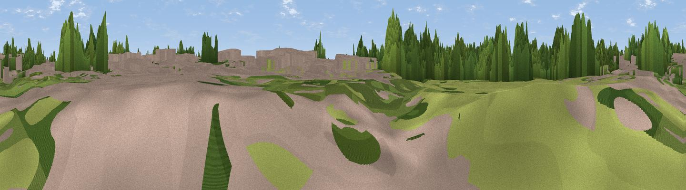

Kitchen Bridge
#45794 in England · top 95% of its area beats it · near Cambridge · path 216 mWhere it is
The exact computed spot (TL 44666 58760). Click the marker for map links.
Public access: the nearest public right of way is about 216 m away — the final stretch may cross private land. Computed from Natural England's CRoW access layer and OpenStreetMap rights of way — not the legal definitive map. Always verify locally.
The view, rendered

A 360° render of this exact spot computed from the terrain model, tree cover and land cover — summer colours, afternoon light, calibrated against photographs of famous viewpoints. Real trees, hedges and buildings will differ in detail.
The panorama
Grey silhouette: terrain skyline in each direction (720 bearings, Earth curvature and refraction included). Dashed green: skyline with trees (+15 m) and buildings (+8 m) as obstacles. Blue strip: how far the ground is visible on each bearing.
Where the view opens
Wedge length = distance to the farthest visible ground on that bearing (vegetation-aware). Rings at 10, 25 and 50 km.
What fills the view
36% woodland · 35% built-up · 24% grassland · 5% cropland
Angular shares of the visible panorama (visual magnitude), not map area. Landscape diversity 0.53 (0–1 Shannon).
Key numbers
More beautiful places nearby
The staircase of upgrades: each row has a higher view potential than everything closer. Driving times are estimates from straight-line distance, calibrated against real road routing — check an actual route before setting out.
| Place | Direction | Drive | Score |
|---|---|---|---|
| Viewpoint near Cambridge | N · 0 km | ~2 min | 18.6 |
| Viewpoint near Coton | WSW · 4 km | ~9 min | 37.9 |
| Cambridge high point | SE · 6 km | ~13 min | 43.6 |
| Viewpoint near Stapleford | SSE · 7 km | ~15 min | 52.9 |
| Viewpoint near Royston | SSW · 21 km | ~36 min | 56.6 |
| Viewpoint near Hexton | SW · 43 km | ~63 min | 65.4 |
| Beacon Hill | SW · 64 km | ~87 min | 74.1 |
| Viewpoint near Halton | SW · 74 km | ~98 min | 74.3 |
52.20808, 0.11574 · source: osm viewpoint · position refined by local search. Computed location — check access rights before visiting.